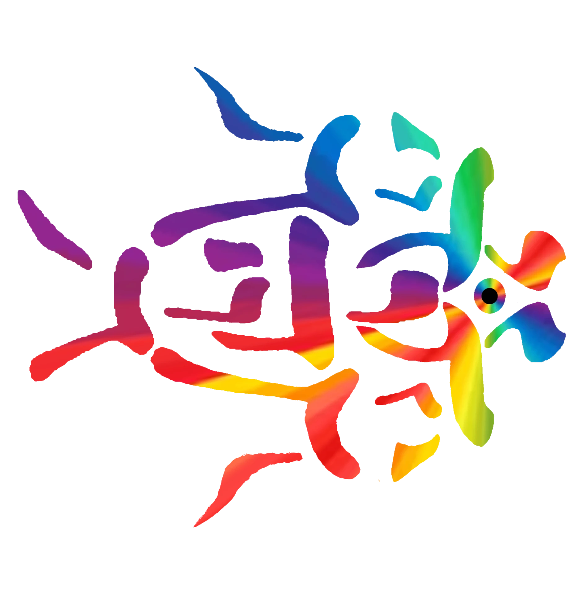

א
YahBible
ת
Bible, Scripture & Word study · create an account to keep your notes, or continue as a guest
Sign in
Create account
Sign in
Continue as guest
☰
☰
☰
📷
א
YahBible
ת
ת
Tav
’iel
🎤
Find
Ask Tav'iel
✕
✦
+
📱
👤
⚙
☰
Available Now At:
www.RealizeUS.me/@yahwehtsidkenu
א
YahBible
ת
⚙ Menu & Settings
👁 Eye settings
▶
O'Tav'iel
Theme
Parchment
Sepia
Night
Reader text size
Hebrew / original text size
Accent hue
Auto-randomize hue
Off
Every 15s
Every 30s
Every minute
Every 5 min
Every 15 min
Christ-quote change interval (seconds)
Read-aloud voice
Voice speed
Show the “Available Now At” banner (to advertise)
Center transparency (reveal fish)
Holy-fish background
Background & fish visibility
Menu transparency (reveal the fish)
Continuous scroll (auto-load next chapter)
Comparison languages (English always on)
Version order (right-panel comparison)
Reset to defaults